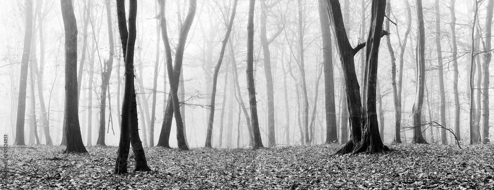

Paragraph 1
Underneath the dense veils of pollen, in between the age-old redwoods,
Underoath, sworn to his family, a boy crosses the border to the outside.
Marked by a barb-wire fence that stood about three stumps tall,
The outside did not look too different to the boy.
Same trees, same grass, same stream that ran right through one and into the other.
Teacher had told him that the inside was perfect.
Teacher had told him that he shouldn't go outside, not that he couldn't.
Plus, it's not like it was hard to get through the fence.
Paragraph 2
The grass, inching its way up his body with every step he took,
Began to show more and more resistance to his drive.
The blades sinking deeper and deeper into his skin,
The sun beating down, the swishing slurring,
Blinking, fading, the corners of his eyes blur.
The boy falters, brought to his knees under the weight of the world.
Paragraph 3
A soft, rhythmic jolting is the call of awakening.
The boy, facing the board shoulders of Teacher, lifts his eyes towards the barbed wire fence.
Teacher did not speak.
The boy let out a sigh.
His eyes returned down to his Teacher,
The boy tucks his head deep into his Teacher’s back.

Back to top ⇡